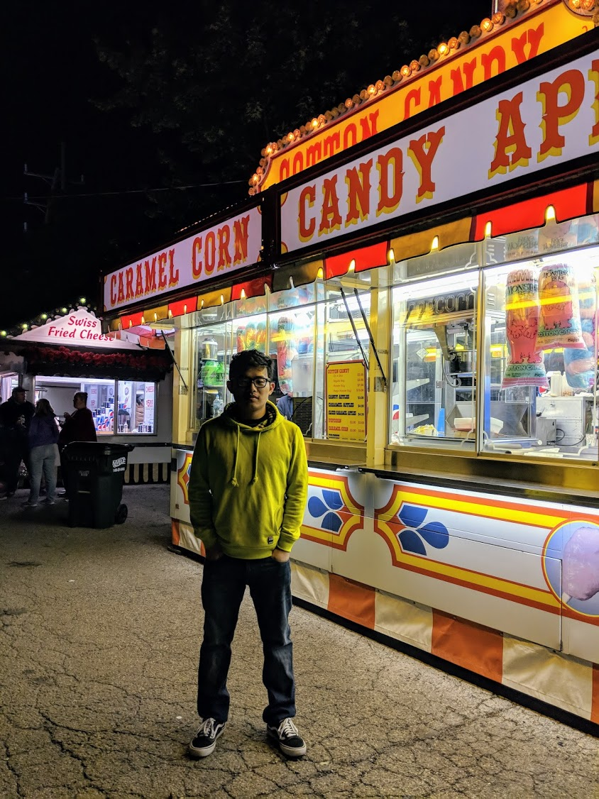

About Me
I am Hanlin Chen, a computer engineer graduate. I am currently looking for software engineer jobs. I have pushed myself beyond expectation to come as far as I have. Life has thrown me a lot of hurdles through my journey. I am passionate about AI (artificial intelligence), physics, math and software development. I enjoy challenging myself and want to help change the world with my ideas/accomplishments

IOS & Web Developer
- Website: harrychen1995.github.io
- Phone: +13304073152
- City: Columbus OH
- Degree: Master of Science
- Email: harrychen1995@yahoo.com
- Employment Status: Available
Background
I was born and raised in the city of Luzhou, Sichuan China where chili spice is nice and green peppercorns are life. During my highschool years back in China, I played badminton and soccer. In 2012, I left China for summer camp for two-month student exchange program in America. I flew 23 hours across Europe and the Atlantic Ocean to Orono, Maine. Where I took my first steps onto American soil. I was in culture shock from what I had seen back home to what you see in reality. Everything from food, people, and media all differed from my culture back home. I had to adjust but, still keep some of my Chinese culture.A year after, I officially attended Orono High School in Maine . I lived at an on-campus dorm by myself and visited with my host family every weekend. I had a lot of free time compared to school back home. My host family invited me to go Ice fishing during the winter and go tubing on the lake in the summer. I participated in cross country and tennis while in highschool. Lobster and Blueberries were amazing we do not have either back home city in China. In 2014, I decided to transition from green pine trees and cold winters of Maine into the hot and sunny, cactus filled desserts of Arizona for my first college experience as a freshman at the University of Arizona. At first I was in culture shocked at how the landscape and people differed from one state to the next, but I ended up meeting my first two friends and roommates KJ and Mandy. I started studying Optical Science for the first 2 years of college, until I desired and changed my career path to become an electrical computer engineer (ECE) the last 2 years for my bachelors. While at UA I met Jero and Adam and are my best friends to this day. I graduated with my bachelors degree from UA in May 2018. I decided to take on my next journey to continue pursuing my masters degree at the Ohio state university. In December 2019, I graduated with my masters degree from the Ohio State University and finally finished school. I have been in school my whole life and am ready to find the job of my dreams. To put my ideas and accomplishments to work in the tech industry
Skills
Programing Language
Frameworks & Library
Resume
Education
Bachelor of Science & Electrical and Computer Engineering
Minor & Applied Math
Aug 2014 - May 2018
GPA: 3.67
University of Arizona, Tucson, AZ
Master of Science & Electrical and Computer Engineering
Aug 2018 - Dec 2019
GPA: 3.88
The Ohio State University, Columbus, OH
Experience
Optical Science Research Assistant - College of Optical Science
Sep 2015- May 2016
University of Arizona
Summer Undergraduate Research Assistant with Professor Tosiron Adegbija
Jul 2016- Aug 2016
University of Arizona
Teaching Assistant in ECE 369 Computer Architecture Organization with Professor Ali Akoglu
Aug 2017 to May 2018
University of Arizona
Teaching Assistant in ECE 2060 Digital Logic with Professor Gregg Chapman
Sep 2018- Dec 2018
The Ohio State University
Completed Projects
Chatctron (Realtime IOS Chat Application)
- Developing frontend user interface with dynamic UI layout and animations in Swift. CRUD message data with google cloud firestore (NOSQL database). Enable user authentication (Account Registration and Email Verification).
- Language: Swift
- Libary:UIKit, FireBase
- Environment: MacOS, Xcode
- Link
Weed Detection
- Developing software application to detect and propose actions to eliminate harmful weeds in central Ohio. Collect and label over 2000 weed images, and training fast rcnn inception network with image data. Build Multi-Threading Graphical User Interface with Google Search Engine. Integrate Trained Model with GUI.
- Language: Python3
- Environment: Linux
- Libraries: tensorflow-GPU, PyQt5, Opencv, numpy, Cuda, Matplotlib, GoogleSearch
- Link
Veterinary Schedule Application for Eastholmes Vet Clinic
- Developing full stack web application to help doctor schedule appointments for large animal. Integrating with Google Firebase backend platform( User Authentication and Real Time Data Base). Deploying web application on Heroku Cloud Service
- Language: HTML, CSS, Javascript
- Libraries:Firebase, Express.js, Boostrap
- Runtime Environment: NodeJS
Lane Detection for Self Driving Car
- Developing software application to perform lane detection and recognize driving-by vehicles to assist autonomous driving car on high way using pretrained SSD Inception V2 Model.
- Language: Python3
- Environment: Linux
- Libraries: tensorflow, Opencv, numpy
- Link
University Class RegistrationWebsite
- Developing online class registration web application. Design client web page and create database for all classes and schedule. Build back end controller to handle all student’s class registration and professor’s schedule.
- Language: CSS, PHP, JavaScript, MySQL
- Environment: Windows, Xampp
High Throughput 32 bit MIPS Processor For Image Processing Algorithm
- Implementing image processing algorithm in MIPS Assembly codes. Build custom fully pipelined MIPS Architecture with forwarding unit and hazard detection to run all MIPS assembly code. Synthesis design on FPGA board.
- Language: Verilog
- Environment: Windows, Vivado Xlinx
- Link